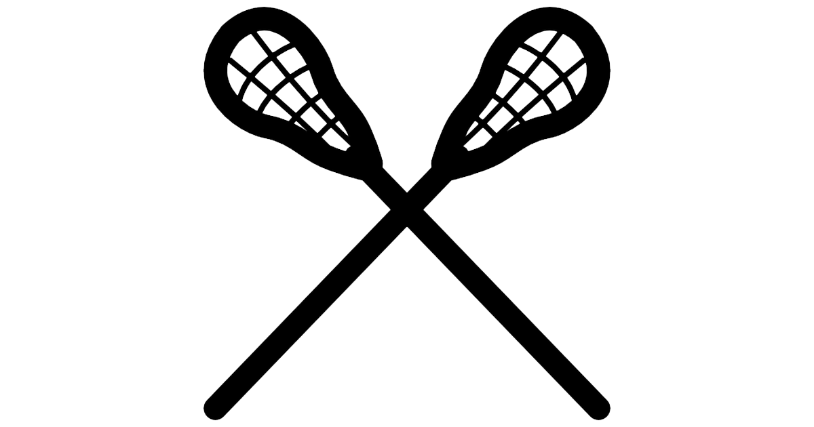

PNG Format Example
About This Image
This image is a clean graphic of two lacrosse sticks. Its strong lines and transparent background make it great for use in sports designs, team graphics, or as part of a gear showcase.
Why PNG Format?
PNG format is ideal here because it supports transparency and keeps the edges of the graphic looking sharp. It also avoids quality loss, which makes it perfect for displaying logos or icons like this one on any background color.
Image source: PNGMart – Lacrosse Sticks PNG